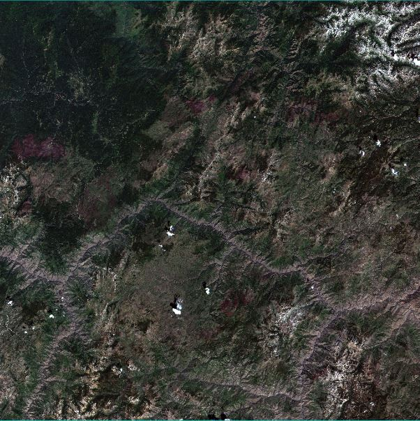
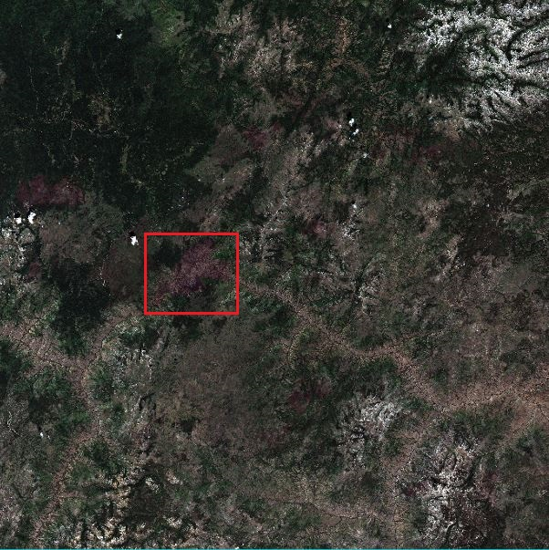
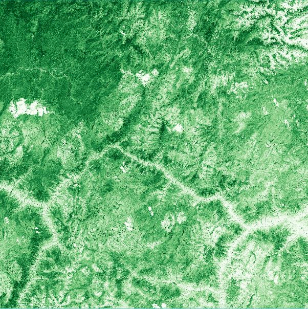
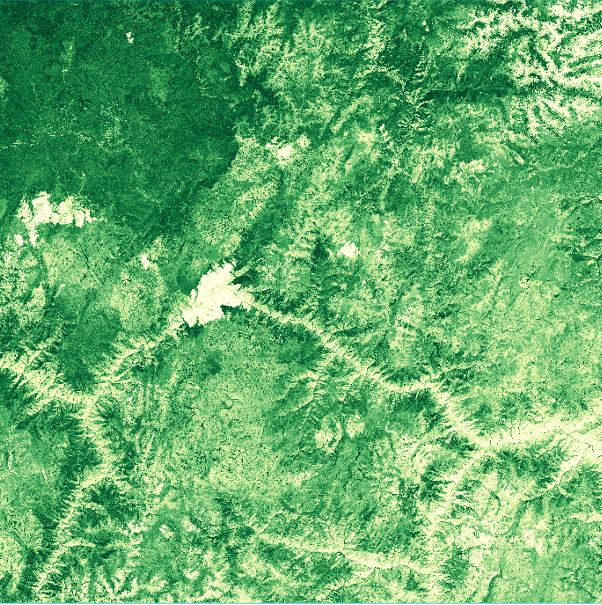
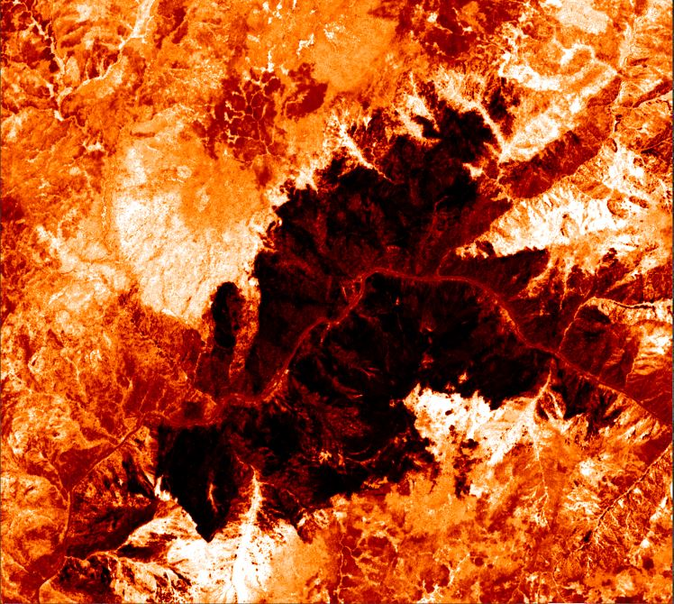

RGB — Jul 2023
RGB — Aug 2023
NDVI — Before
NDVI — After
Normalized Burn Ratio Burn Area Index
Burn Area Index
Overview
For my senior year Satellite Climatology final we had to use ENVI to create spectral images of a project of our choice. I chose to analyze a wildfire that I paddled past the previous summer on a river trip in Idaho.

RGB — Jul 2023
RGB — Aug 2023
NDVI — Before
NDVI — After
Normalized Burn Ratio
Burn Area Index
I identified the study area then downloaded red, blue, green, and near infrared bands from the Sentinel-2 satellite. Using the build band stack tool I created two RGB before and after pictures of the fire. These served as my base for analysis. I made NDVIs, a burn area index, and a normalized burn ratio using spectral functions in ENVI to assess burn severity.
I produced a written report containing charts and maps to support my analysis. I researched historic climate data and recent climatic trends that allowed this fire to burn over 25,000 acres and consume everything in its path within a nine hour timeframe.